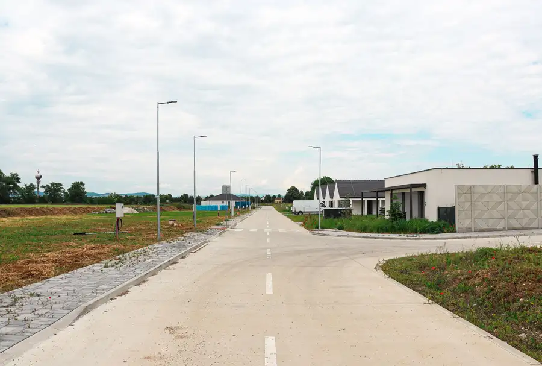
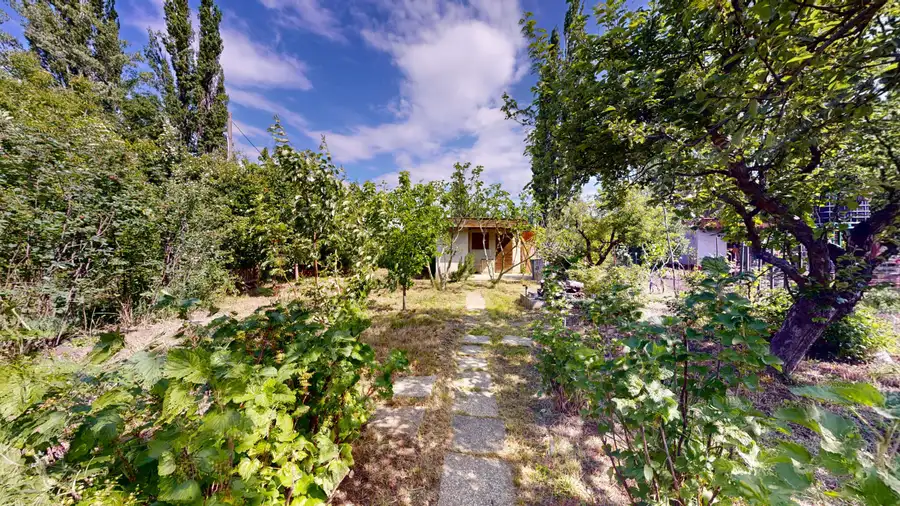
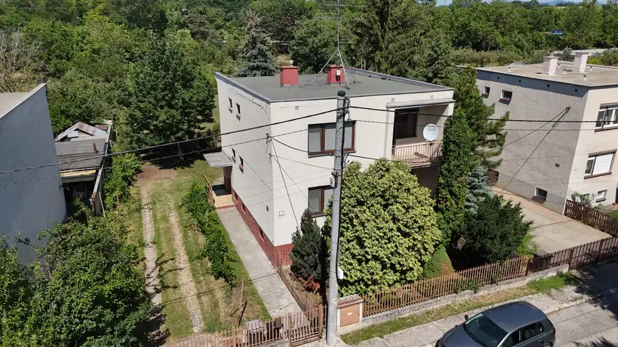
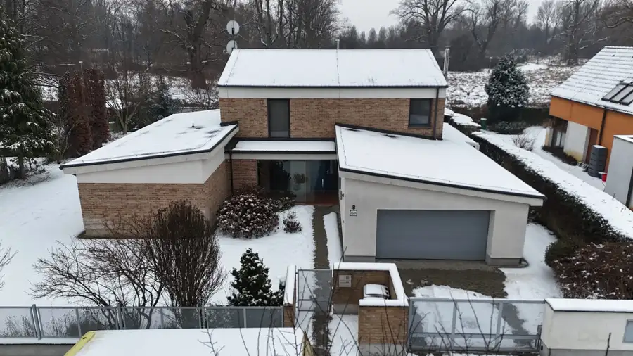
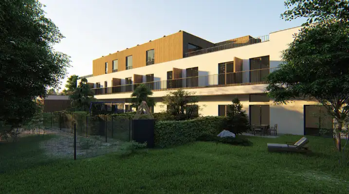
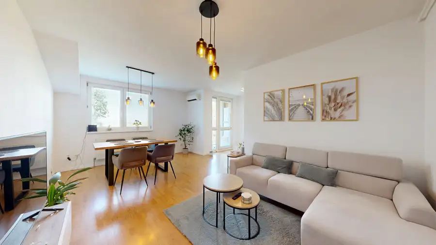

Aktuálna ponuka
Nehnuteľnosti, ktoré ponúkam
10 nehnuteľností na predaj a prenájom. Vyberte typ, alebo napíšte lokalitu.
10 z 10 ponúk
 DomNové10
235 000 €AZ. Novostavba 4i RD | Výhľad na polia a kopce | Pozemok 500 m² | Pastuchov
Pastuchov
91 m²
Realitná kancelária Andel & Zachar Vám ponúka na predaj moderný 4-izbový rodinný dom v obci Pastuchov, len 7 minút od mesta Hlohovec.Táto…
DomNové10
235 000 €AZ. Novostavba 4i RD | Výhľad na polia a kopce | Pozemok 500 m² | Pastuchov
Pastuchov
91 m²
Realitná kancelária Andel & Zachar Vám ponúka na predaj moderný 4-izbový rodinný dom v obci Pastuchov, len 7 minút od mesta Hlohovec.Táto…
 BytNové8
162 500 €AZ. Kompletne zariadený 1,5-izbový byt s investičným potenciálom – Špačinská cesta, Trnava
Trnava
2-izbový34 m²
Hľadáte ideálne štartovacie bývanie bez ďalších starostí so zariaďovaním, alebo premýšľate nad kúpou nehnuteľnosti, ktorá vám začne okamžite zarábať?…
BytNové8
162 500 €AZ. Kompletne zariadený 1,5-izbový byt s investičným potenciálom – Špačinská cesta, Trnava
Trnava
2-izbový34 m²
Hľadáte ideálne štartovacie bývanie bez ďalších starostí so zariaďovaním, alebo premýšľate nad kúpou nehnuteľnosti, ktorá vám začne okamžite zarábať?…
 BytNové9
250 380 €AZ. Exkluzívny 3-izbový penthouse 96 m² s obrovskou 96 m² terasou – Galanta City Home
Galanta
2-izbový96 m²7. podlažie
Predstavujeme Vám výnimočnú ponuku prémiového 3-izbového bytu, ktorý spĺňa tie najvyššie nároky na moderné, vzdušné a nadštandardné bývanie. Byt sa…
BytNové9
250 380 €AZ. Exkluzívny 3-izbový penthouse 96 m² s obrovskou 96 m² terasou – Galanta City Home
Galanta
2-izbový96 m²7. podlažie
Predstavujeme Vám výnimočnú ponuku prémiového 3-izbového bytu, ktorý spĺňa tie najvyššie nároky na moderné, vzdušné a nadštandardné bývanie. Byt sa…
 Pozemok10
70 560 €AZ. Stavebný pozemok so sieťami - 504m2 - Veselé
Piešťany
550 m²
Ponúkame na predaj stavebný pozemok s inžinierskymi sieťami v projekte REZIDENCIA VESELÉ s výmerou 504m2.Pozemok disponuje: * voda * elektrina *…
Pozemok10
70 560 €AZ. Stavebný pozemok so sieťami - 504m2 - Veselé
Piešťany
550 m²
Ponúkame na predaj stavebný pozemok s inžinierskymi sieťami v projekte REZIDENCIA VESELÉ s výmerou 504m2.Pozemok disponuje: * voda * elektrina *…

Pozemok10 99 800 €AZ. Stavebný pozemok 713m2 - Veselé Veselé 713 m² Ponúkame na predaj stavebný pozemok s inžinierskymi sieťami v projekte REZIDENCIA VESELÉ s výmerou 713m2.Pozemok disponuje: * voda * elektrina *…
Pozemok9 42 900 €AZ. Predaj záhrady – Kamenný mlyn, Trnava | 307 m² Trnava 307 m² Ponúkame na predaj záhradu v záhradkárskej lokalite Kamenný mlyn v Trnave, ktorá patrí k vyhľadávaným a pokojným oblastiam v blízkosti mesta.Pozemok…
Dom10 206 000 €AZ. 3-podlažný dom (200m2) s obrovským investičným pozemkom (1 420 m²) v obci Bučany Bučany 200 m² Ponúkame na predaj priestranný, plne podpivničený rodinný dom s veľkorysým pozemkom, ktorý sa nachádza vo výbornej a vyhľadávanej lokalite v obci…
Dom10 Cena dohodouAZ. NA PREDAJ reprezentatívne rodinné sídlo v tichej časti Piešťan Piešťany 295 m² Sú miesta, ktoré majú svoju vlastnú atmosféru. A potom sú miesta, kde sa luxus nespája s vystavovaním na obdiv, ale s dokonalým pokojom a intimitou.…
Pozemok10 Cena dohodouAZ. STAVEBNÉ POZEMKY ako DEV. PROJEKT pripravené na výstavbu Piešťany 3438 m² AndelZachar pridáva do ponuky stavebné pozemky o celkovej výmere 3438 m2 na výstavbu 2 bytových domov v celkovej kapacite 32 bytov (na prízemí aj s…
BytRezervované10 124 900 €AZ. 3-izbový byt, 70m2+lodžia a pivnica, len 10min. od Trnavy Brestovany 3-izbový70 m²3. podlažie Andel&Zachar ponúka na predaj nadčasovo zariadený obecný byt v pokojnej a vyhľadávanej obci Brestovany, na Brestovej ulici. Byt sa nachádza…Tomuto výberu zatiaľ nezodpovedá žiadna ponuka. Napíšte mi, čo hľadáte.